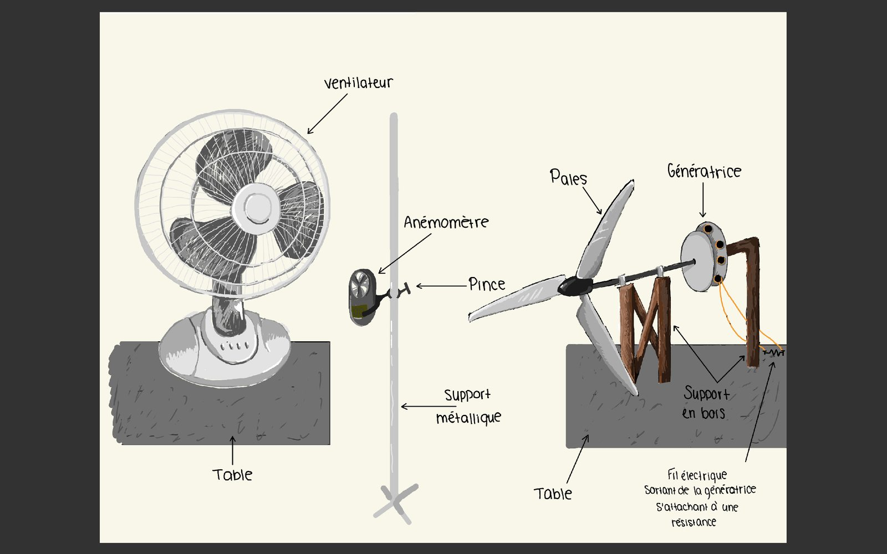
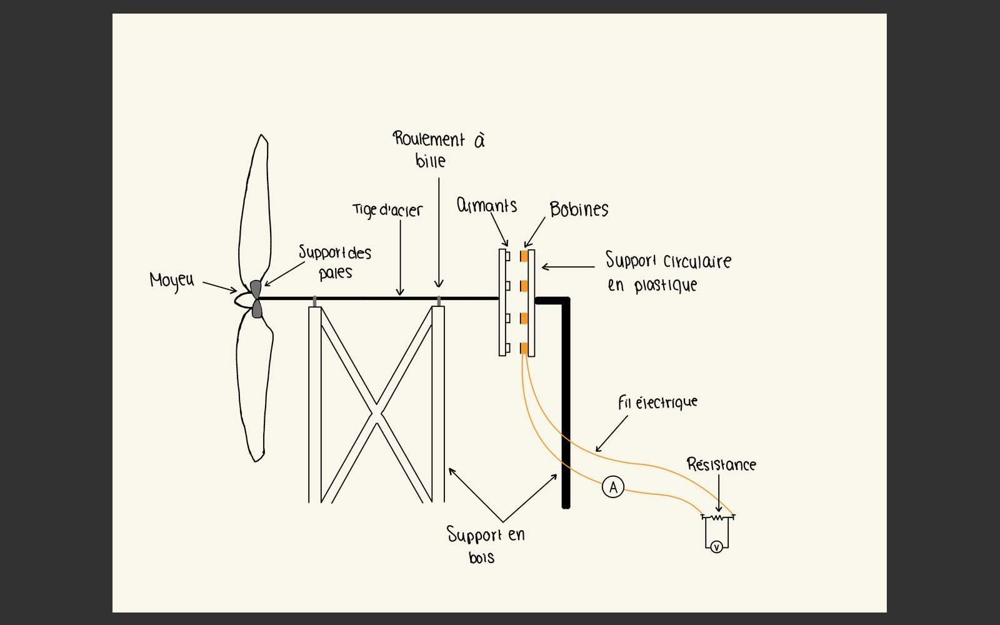

Team research project · Cégep Gérald-Godin · May 2024
Wind Turbine Configuration & Output

What blade configuration produces the most energy?
Wind turbines convert the kinetic energy of moving air into electricity, and how well they do that comes down largely to blade geometry. With a team of four, we built a small-scale turbine entirely from scratch and used it to isolate the effect of three design variables on electrical output: the number of blades, the pitch angle (the blade's tilt relative to the wind), and the blade size.
The goal wasn't just to find one "best" turbine — it was to build a rig where we could swap any of the three variables independently and re-test, so the hub, blade mounts, and blade sizes were all designed to be interchangeable rather than fixed.
The rig
A fan supplies a constant airstream (13 ± 1 m/s, checked with an anemometer) toward the turbine. A steel shaft runs through two ball bearings on a wood frame — blades mount on one end, and a disc of magnets on the other. As the blades spin the shaft, the magnets rotate past a fixed ring of coils, inducing a current. That current runs through an ammeter and a resistor in series, with a voltmeter in parallel, both feeding a PASCO interface so we could log the actual energy produced (in W·s) over 10-second intervals using Capstone software.
For each configuration, we ran ten 10-second trials, starting only once the turbine reached its maximum rotation speed, then averaged the results.
Results
Energy output vs. number of blades (30° pitch, medium blades)
Energy output vs. pitch angle (3 blades, medium size)
Energy output vs. blade size (3 blades, 30° pitch)
Average electrical energy per 10s trial, in W·s. ★ marks the best-performing value in each test, confirmed with a two-mean hypothesis test at the 1% threshold.
Reading the results against our hypotheses
Going in, theory predicted 3 blades would be optimal for balancing energy capture against aerodynamic loss. In practice, 4 blades won: 1 blade rotated unevenly, 2 suffered from gyroscopic precession, and 6 blades started clipping each other's turbulent wake — 4 turned out to be the point where blades capture enough wind without crowding each other.
The pitch angle result matched our hypothesis directly: the smallest tested angle, 10°, produced the most energy, and output fell steadily as pitch increased toward 90°. This tracks the aerodynamic theory — decreasing pitch increases the angle of attack, which increases lift, up to the point of stall.
Blade size was the biggest surprise: we expected medium blades to win, since large ones seemed too heavy for our fan's output and small ones too small to catch enough wind. Small blades won convincingly instead — most likely because all three tested sizes were larger than the fan's own radius, so the medium and large blades carried "dead weight" tips that never actually caught airflow, dragging down their effective performance.
Conclusion
The optimal configuration we tested was 4 small blades at a 10° pitch angle. That said, we were careful to flag the gap between a lab result and a deployable design — a real turbine also has to account for manufacturing cost, structural balance, and durability, which this experiment didn't measure.
Sources of error
- Fan-generated wind wasn't perfectly constant — it varied roughly 12–14 m/s within a single trial.
- Testing happened in a shared, non-isolated space; other teams' fans, doors opening and closing, and people standing behind the rig measurably affected results — we saw rotation speed drop by close to 30% when someone stood behind the setup.
- Cardboard blades couldn't be manufactured perfectly identically, introducing small mass imbalances.
- Pitch angle was measured by taping a ruler to a protractor, since no instrument small enough was available — this limited angular precision.
Gallery
